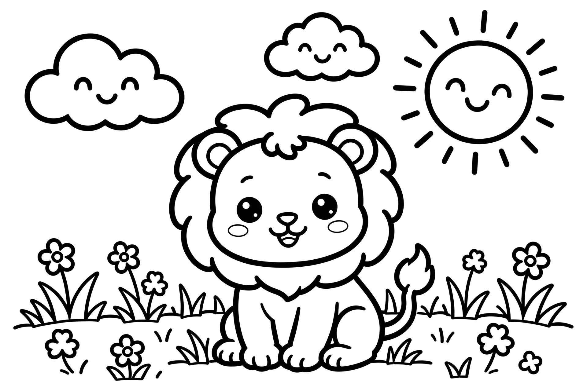

Let's make something colorful!


LionColor it!
Watch the pictures come to life! A fresh set every day.
Let's make something colorful!

Locked
Watch the pictures come to life! A fresh set every day.
Loading your coloring desk…
Tap a stack to see its pictures
Your paintings stay here in the app.
Your paintings stay here in the app.
Pick a crayon, then tap the picture to color it in! Pinch or use + / − to zoom in on tiny spots.
Draw anything you like! Neon colors glow, and Mirror draws both sides at once.
Look what you made! Tap a stack to see that stage's paintings.
Storage is almost full — ask a grown-up to delete some old paintings.
Storage is full — tap a stage, then Select, to delete old paintings.
Your paintings stay here in the app.
No paintings yet — color a page and tap Done!
Your finished paintings
Storage is almost full — ask a grown-up to delete some old paintings.
No paintings yet — color a page and tap Done!
Look what you made!
Your paintings stay here in the app.
Tap your picture to make it dance!
Press and hold the circle for 3 seconds.
This picture could not be saved. Your picture is still here — choose what to do.
They will be gone from the gallery, and those pages will be blank to color again.
Parental Control
An optional pack of 10 Bible-story coloring pages. Off by default — only a parent can turn it on.
An optional pack of 10 mythical creature coloring pages. Off by default — only a parent can turn it on.
An optional pack of 10 superhero coloring pages. Off by default — only a parent can turn it on.
What the app is, how the stages and tools work, and what makes it safe for children.
Read about the appHow the app protects your child's privacy, what the purchase covers, and how refunds work.
Read our policiesEach child gets their own pictures, badges, and gallery — all saved on this device only. No names are needed.
Pick a picture:
Pick a color:
What your child has done — not just how long they played.
These settings are for grown-ups only.
After this many finished pictures, the app shows a friendly "time to rest" screen. Never a hard cut — your child can always choose one more picture.
Two brand-new coloring pages arrive every month, all year long. The bonus pages are this month's new drop.
If your family loves My Little Studio, a review in the store helps other families find it.
Paintings stay in this app — they are never saved to the phone's photo gallery.
This is your color guide — match the colors, or make up your own!
Look — your picture came alive!
You colored the whole picture!
Draw your name with your finger — or type it with a grown-up's help.
We missed you — here's a little gift for your gallery.
You got a Sunshine Star!
Time for a little rest. Your pictures will be right here when you come back.
Tap the present to open it!
Six pictures done — now you can color with pencils, just like a big artist!